The Art of Failure

Engineering Mechanics 100
Engineering Maths 140
Engineering Graphics 232
Strength of Materials 232
Thermodynamics 236
Mechanical Design 238
I probably shouldn't be
studying Engineering
I failed. And that's ok.


 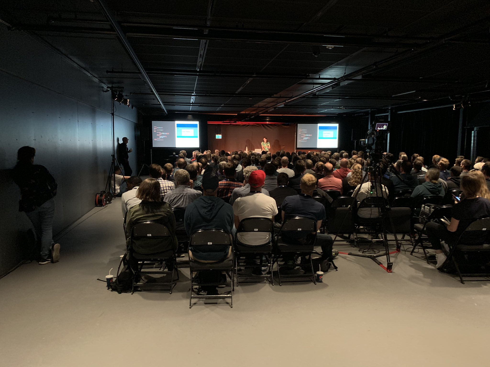
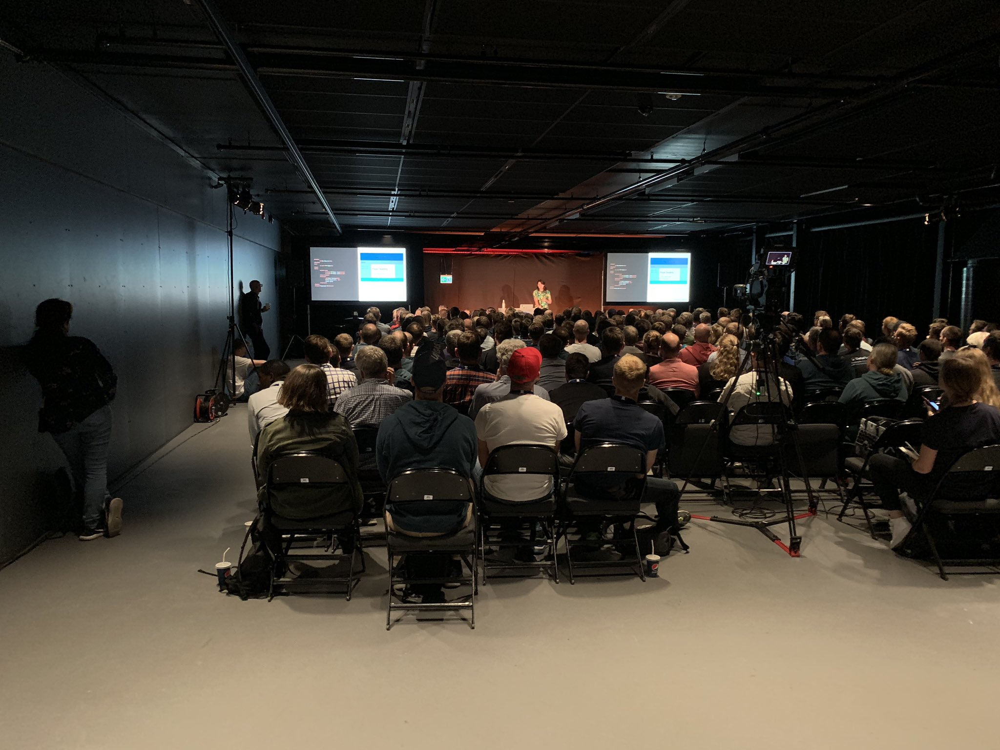
Learn
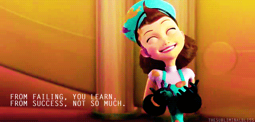

Retro your Failure
- Check, double check, triple check
- Get another set of eyes
- There is a time and place for experiments
- Deposit. Upfront. No exceptions
- Have my own contract


Failure
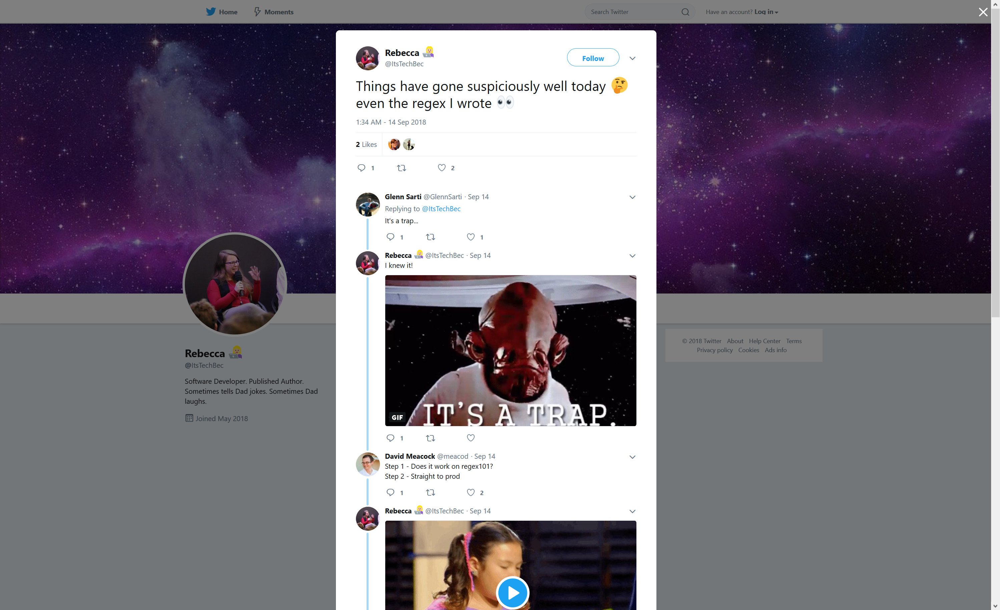
So Failure is Good?
 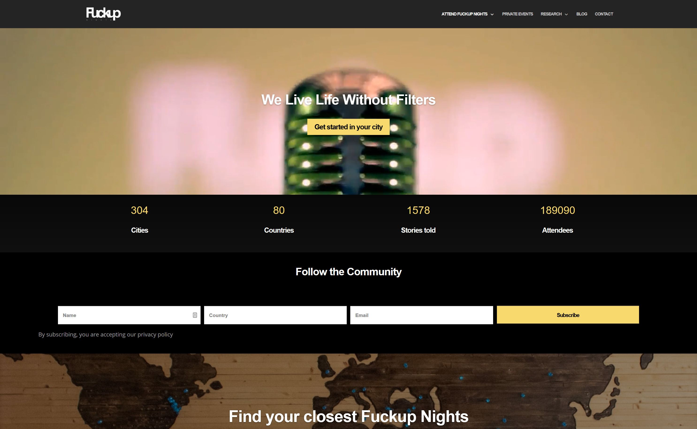
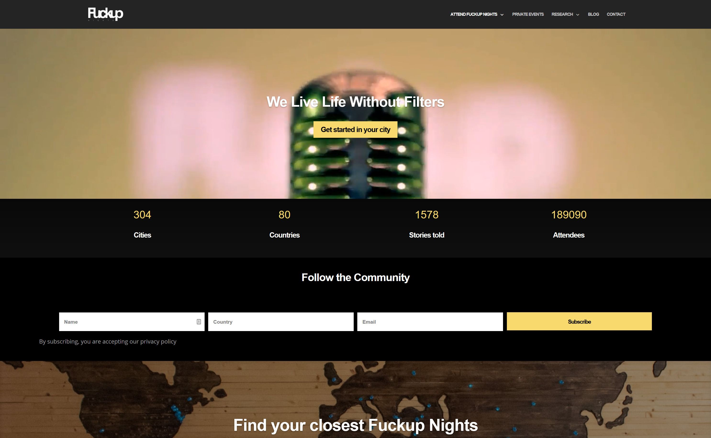
Don't make mistakes out of stupidity


Failure isn't one size fits all
Let yourself feel it,
then learn from it
It's ok to not be ok
You

Manage Your Ducks
 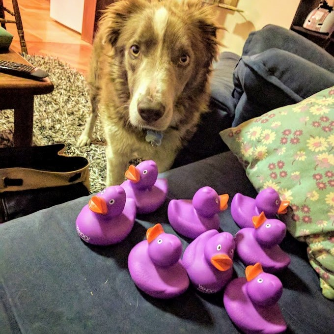
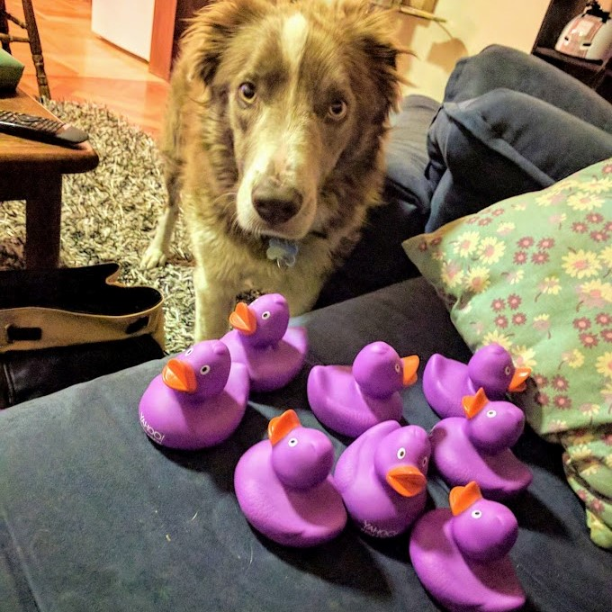


 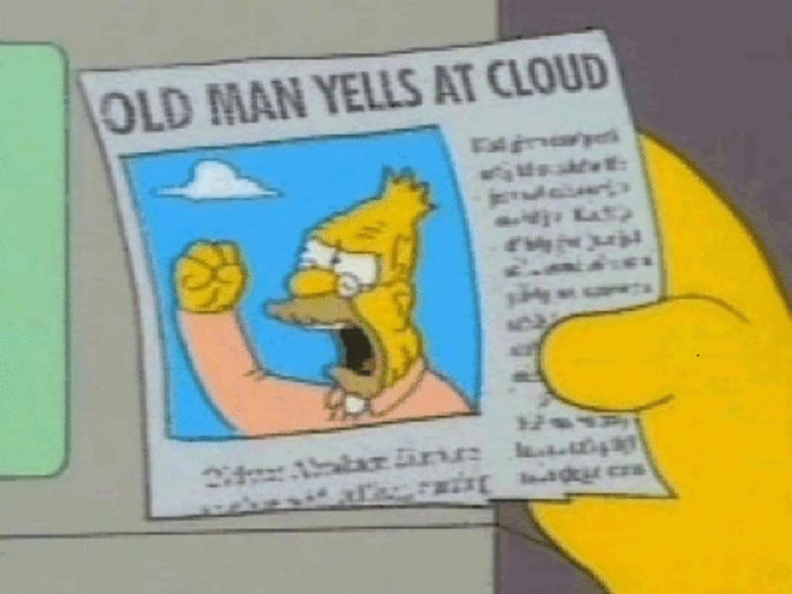
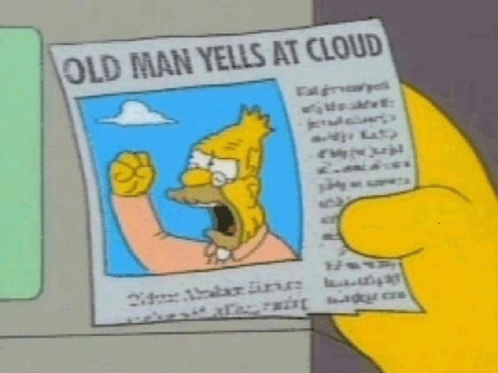
People


Support your Team
Failures are all different
Embrace Failure
 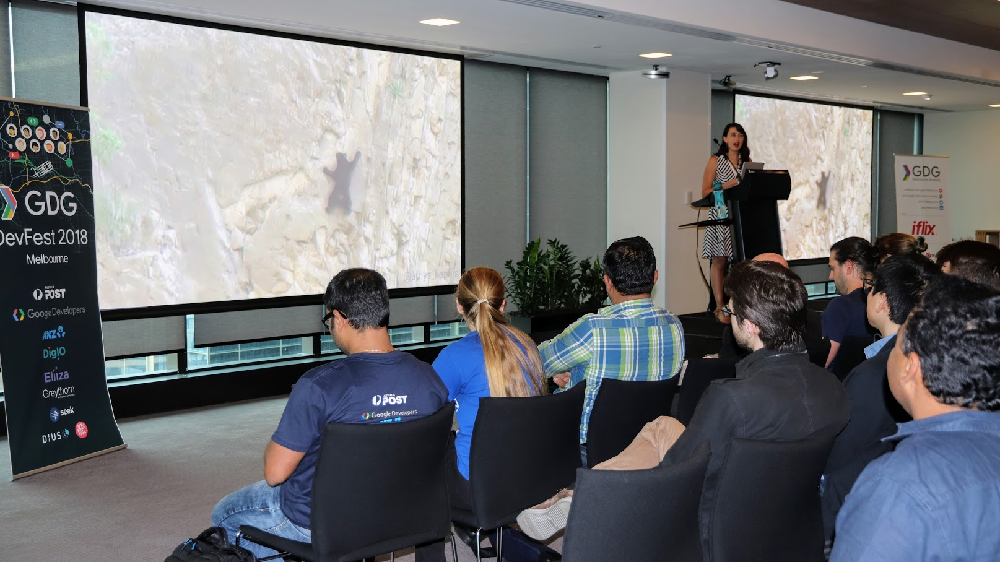
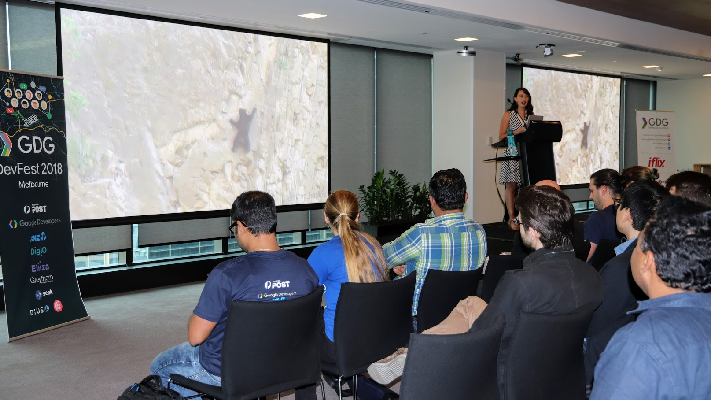
Little Failures
prevent
Big Failures